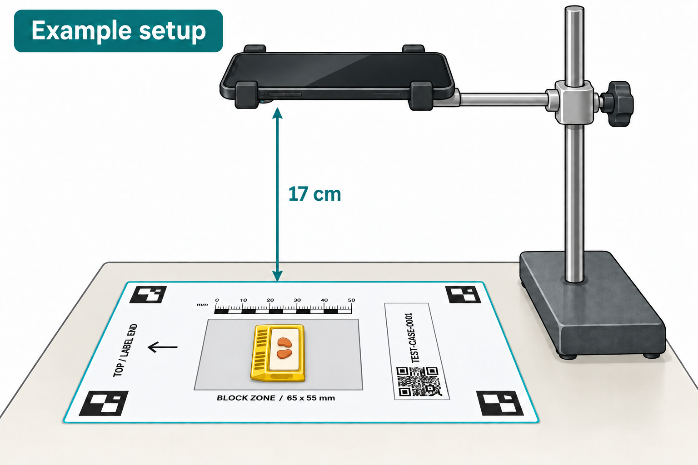

A4
210 × 297 mm
Download A4 PDF2 pages · Mat + photography instructions
Choose your paper size. Each PDF includes the printable mat and a step-by-step photography guide.
210 × 297 mm
Download A4 PDF2 pages · Mat + photography instructions
8.5 × 11 inches
Download Letter PDF2 pages · Mat + photography instructions
Use this illustration as a reference when setting up your photography station.

Handling block photos: Use an institution-approved camera, storage and transfer workflow. See page 2 of the PDF for guidance on protected health information (PHI).